Le fait de départ : le prix du paquet, de 3,20 € à 13,50 €
Prix moyen d’un paquet : 3,20 € en 2000, 13 € en 2025 ; paquet type de 20 cigarettes : 13,50 € en février 2026 (Hill, 2026 ; Obradovic, The Conversation, 25/07/2026).
Au 1er novembre 2026, nouveaux prix homologués : le Marlboro Red souple passe à 14,00 € (Bourse Inside, 08/10/2026).
Conséquences : ventes des buralistes −8,2 % en 2025 (OFDT) ; fumeurs quotidiens chez les 18-75 ans : 25 % en 2021, 18 % en 2024 (Santé publique France).
Question de la séance : augmenter le prix du tabac fait-il arrêter de fumer ?
Trois questions en une : élasticité, incidence fiscale, addiction
La question de la séance en contient trois.
De combien les ventes baissent-elles quand le prix monte ? C’est l’élasticité.
Qui paie vraiment la taxe : le fumeur, le fabricant, le buraliste ? C’est l’incidence fiscale.
Un fumeur dépendant réagit-il au prix comme un acheteur ordinaire ? C’est l’économie de l’addiction.
Rappel : offre, demande et élasticité-prix de la demande
Offre et demande : la quantité demandée baisse quand le prix monte, la quantité offerte augmente ; à l’équilibre (P*, Q*), elles sont égales.
Une variation du prix fait glisser le long des courbes ; une autre cause (coût, goûts, taxe) déplace une courbe : O → O′.
Élasticité-prix de la demande : e = variation de Q (en %) ÷ variation de P (en %). Elle est négative. Si |e| < 1, la demande est peu élastique.
Rappel : impôt indirect, externalité, positif et normatif
Impôt indirect : inclus dans le prix, versé à l’État par le vendeur. La TVA est un pourcentage du prix ; une accise frappe un produit précis (tabac, alcool, carburant).
Externalité : effet sur d’autres, sans compensation par le marché (le tabagisme passif). Une taxe correctrice, au sens de Pigou, fait payer ce coût à celui qui le cause.
Positif et normatif : l’analyse positive décrit ce qui est ; l’analyse normative dit ce qui devrait être.
Élasticité-prix : Marshall (1890), substituts et temps d’adaptation
\(e = \dfrac{\Delta Q / Q}{\Delta P / P}\), en %.
Marshall, qui a fait de l’élasticité l’outil de mesure de la réaction au prix, note qu’elle dépend (1890) :
des substituts dont disposent les acheteurs ;
du temps laissé aux acheteurs pour s’adapter.
Pour le tabac : un fumeur dépendant a peu de substituts à court terme.
Dépense totale : elle augmente avec le prix si |e| < 1
Définition 1 (Dépense totale et élasticité) La dépense totale des acheteurs est P × Q ; c’est aussi la recette des vendeurs. Quand le prix monte :
peu élastique (|e| < 1) : la quantité baisse moins vite que le prix ne monte, la dépense augmente ;
élastique (|e| > 1) : la quantité baisse plus vite, la dépense diminue.
Élasticité de l’offre : variation de la quantité offerte (en %) ÷ variation du prix (en %). Elle est positive.
Tabac : une élasticité-prix comprise entre −0,5 et −0,3
Les estimations sont nettement inférieures à 1 en valeur absolue.
Santé publique France : e ≈ −0,4 sur 2000-2015.
Études récentes : entre −0,3 et −0,4 (La finance pour tous, 24/07/2026).
Sur 1950-2025, hors 2016 (année aberrante) : environ −0,50 (Hill, 2026, figure 4.2).
Fourchette retenue : une hausse de 10 % du prix fait baisser les ventes de 3 à 5 %.
Jenkin (1872) : la charge d’une taxe dépend des deux courbes
Avant 1885 · photographie prêtée par Mrs Dew Smith, frontispice du Memoir de R. L. Stevenson, domaine public, Wikimedia Commons
Fleeming Jenkin (1872), Proceedings of the Royal Society of Edinburgh · précurseur de l’analyse néoclassique. L’un des premiers à tracer des courbes d’offre et de demande, il montre que la charge d’une taxe dépend de leur forme, non de celui qui la verse.
La charge retombe sur le côté du marché le moins élastique, celui qui peut le moins se dérober.
Incidence fiscale : incidence légale et incidence économique
Définition 2 (Incidence fiscale) L’incidence fiscale est la répartition réelle de la charge d’une taxe entre acheteurs et vendeurs.
L’incidence légale dit qui verse la taxe à l’État.
L’incidence économique dit qui la supporte : les acheteurs, par la hausse du prix qu’ils paient ; les vendeurs, par la baisse du prix qu’ils gardent.
Elle dépend des élasticités de l’offre et de la demande, et non de celui qui verse la taxe.
Becker et Murphy (1988) : un fumeur qui anticipe les prix futurs
2008 · MAR, domaine public, Wikimedia Commons
Gary S. Becker et Kevin M. Murphy (1988), « A Theory of Rational Addiction », Journal of Political Economy · école de Chicago. Fumer aujourd’hui augmente l’envie de fumer demain : c’est ce qui définit l’addiction.
Un fumeur rationnel le sait et tient compte des prix futurs. Une hausse de prix durable et annoncée réduit donc la consommation : un peu tout de suite, davantage à long terme.
Addiction rationnelle : la demande est plus élastique à long terme
Définition 3 (Addiction rationnelle) Une consommation est addictive quand la quantité consommée aujourd’hui augmente l’envie de consommer demain. Elle est rationnelle, au sens de Becker et Murphy, quand le consommateur prend en compte cet effet et les prix futurs dans ses choix.
Conséquence : la demande est plus élastique à long terme qu’à court terme.
Gruber et Kőszegi (2001) : des fumeurs qui anticipent mais regrettent
2014 · Chambre des représentants des États-Unis, domaine public, Wikimedia Commons
Jonathan Gruber et Botond Kőszegi (2001), Quarterly Journal of Economics · économie comportementale. Aux États-Unis, la consommation de cigarettes baisse dès qu’une hausse de taxe est votée, avant même qu’elle s’applique : les fumeurs anticipent bien.
Mais beaucoup voudraient arrêter et n’y arrivent pas. La taxe les aide alors à tenir leurs propres résolutions.
Internalité : un coût imposé à son propre « moi futur »
Définition 4 (Internalité) Une internalité est un coût qu’une personne s’impose à elle-même, dans le futur, sans en tenir compte au moment de choisir : le fumeur qui voulait arrêter et n’y arrive pas.
Becker et Murphy : le fumeur choisit en connaissance de cause ; la taxe ne se justifie que par le coût imposé aux autres.
Gruber et Kőszegi : la taxe doit aussi corriger l’internalité, plus élevée d’au moins un dollar par paquet aux États-Unis.
Dépense et élasticité (1/3) : au départ, 10 € et 100 millions
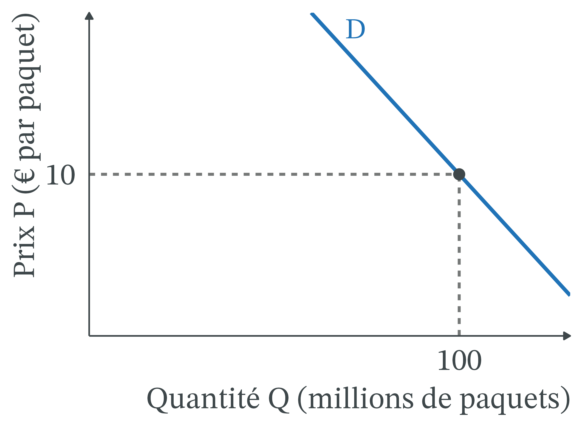
Marché fictif : le paquet coûte 10 €, il s’en vend 100 millions par an.
La dépense P × Q est l’aire d’un rectangle sous la demande.
Avant : 10 × 100 = 1 000 millions d’euros.
Dépense et élasticité (2/3) : le prix passe à 12 €, avec e = −0,4
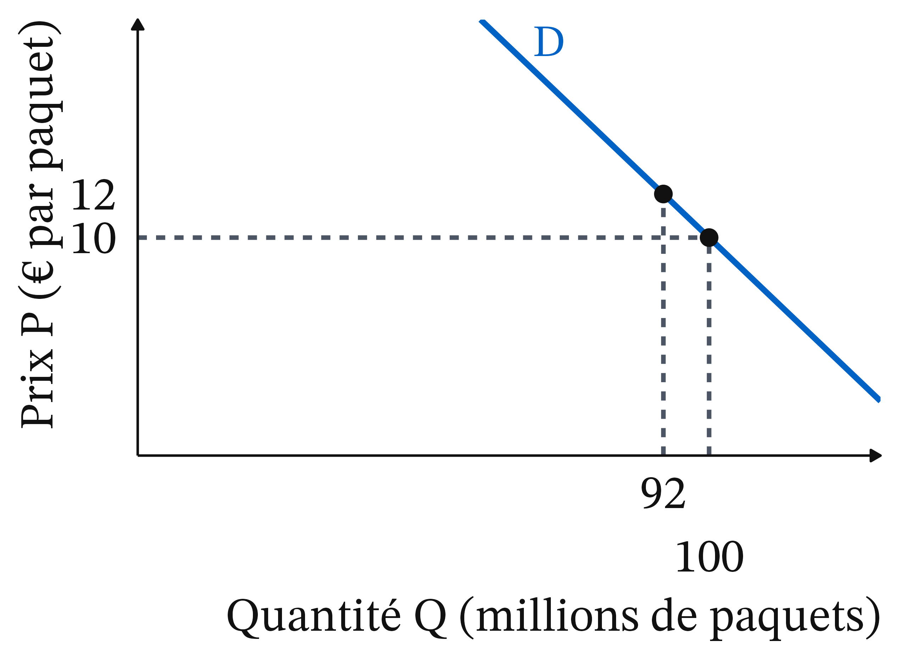
Prix : (12 − 10) ÷ 10 = +20 %.
Quantité : −0,4 × 20 = −8 %, soit 100 × 0,92 = 92 millions de paquets.
Dépense après : 12 × 92 = 1 104 millions, soit +10,4 %.
Dépense et élasticité (3/3) : un rectangle gagné, un rectangle perdu
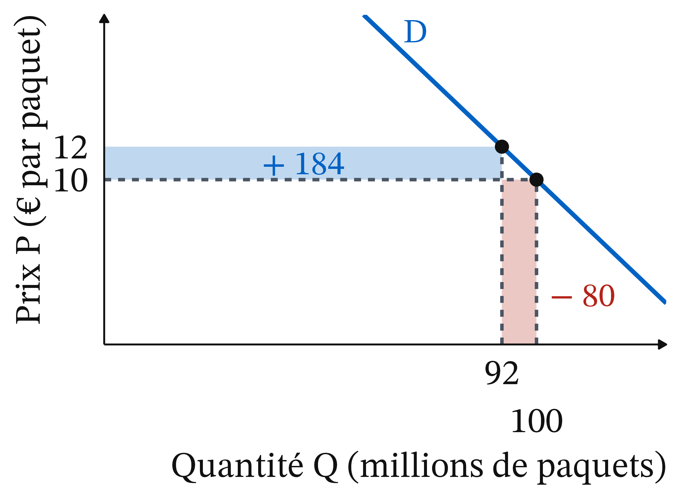
Gagné (bleu) : 92 millions de paquets encore achetés, (12 − 10) × 92 = 184 M€.
Accise spécifique : 73,30 € pour 1 000 cigarettes, soit 1,466 € ; accises : ≈ 8,89 €.
TVA : 20 ÷ 120 = un sixième du prix, 13,50 ÷ 6 = 2,25 €.
Taxes : 8,89 + 2,25 ≈ 11,14 €, soit 82,5 % du prix.
Exemple chiffré : le fabricant garde moins de 1 € par paquet
Reste : 13,50 − 11,14 = 2,36 €. Remise brute du buraliste : 10,29 % du prix (2025), ≈ 1,39 €. Fabricant : ≈ 0,97 € (7,2 % du prix).
Si le prix monte de 1 € : accise proportionnelle 0,55 € ; TVA ≈ 0,17 € ; buraliste ≈ 0,10 €. Fabricant : ≈ 0,18 €.
L’État reçoit donc 0,72 € de cet euro.
Court et long terme (1/3) : la demande de court terme est raide
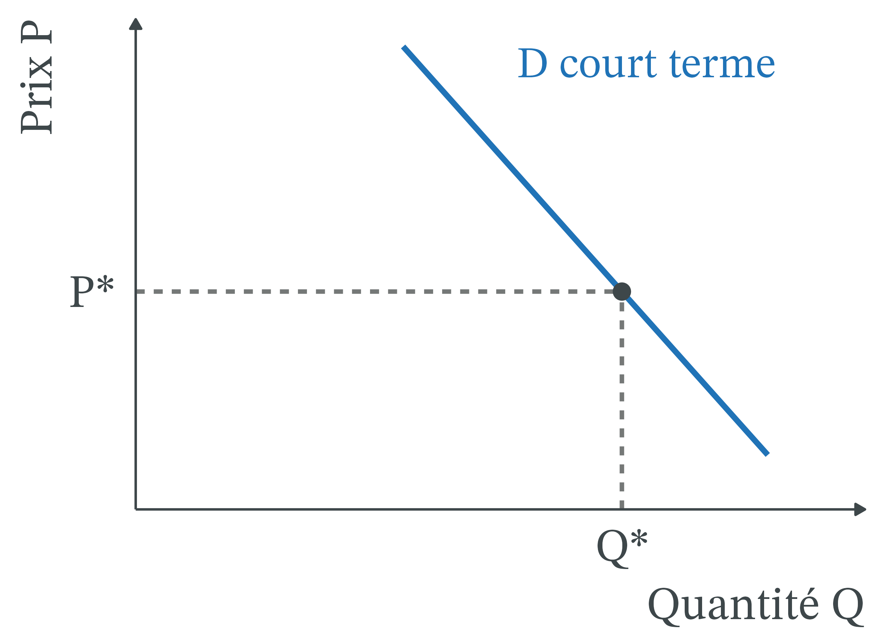
Bien addictif : au départ, prix P* et quantité Q*.
Demande de court terme, celle de la première année : raide.
Fumer aujourd’hui augmente l’envie de fumer demain.
Valeurs fictives : e = −0,3 à un an.
Court et long terme (2/3) : la première année, la quantité baisse peu
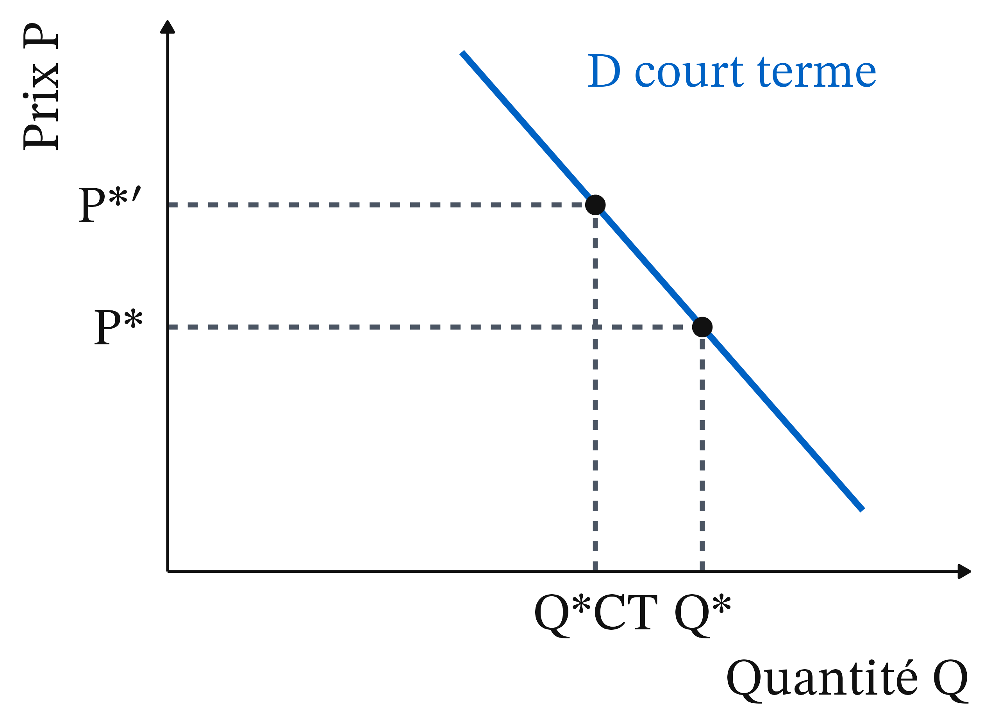
Hausse durable du prix de 20 %, de P* à P*′.
On glisse le long de la demande de court terme.
Première année : −0,3 × 20 = −6 % ; la quantité tombe à Q*CT.
Court et long terme (3/3) : à long terme, la demande est plus plate
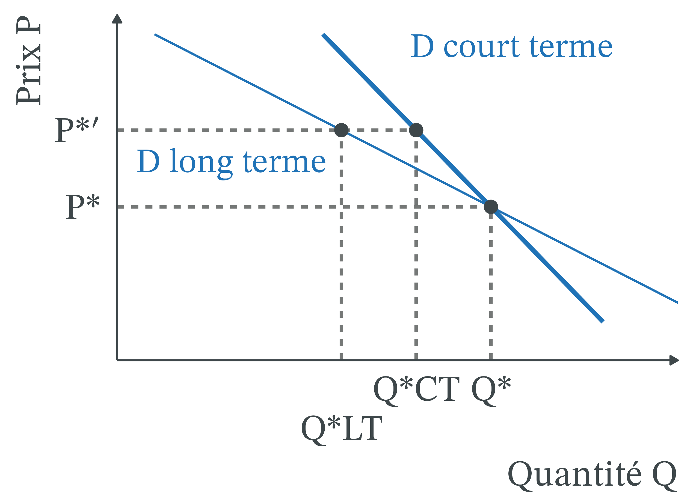
Après plusieurs années, e = −0,6 : −0,6 × 20 = −12 %, quantité Q*LT.
Becker et Murphy : qui fume moins aujourd’hui aura moins envie de fumer demain.
La demande de long terme est plus élastique.
France, 2006-2025 : prix réel multiplié par 2,1, ventes divisées par 2,6
Prix réel du tabac (corrigé de l’inflation) × 2,1 ; ventes de cigarettes des buralistes par adulte ÷ 2,6 (Hill, 2026, chapitre 4).
Effet pour moitié sur le nombre de fumeurs (surtout des adultes qui arrêtent), pour moitié sur la quantité fumée par chacun (OMS, 2012 ; Hill, 2026).
Réponse : oui, en partie. D’autres mesures ont joué (campagnes, interdiction de vente aux mineurs) : une corrélation, pas une expérience.
Tabac, 2000-2025 : prix multiplié par 4,6, quantités divisées par 2,8
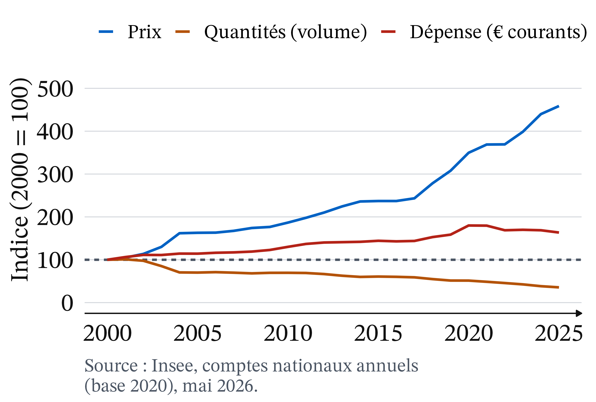
2000-2025 : prix × 4,6, quantités ÷ 2,8, dépense +64 % en euros courants.
Prix en général : +59 % (Eurostat, IPCH, février 2026). Prix réel du tabac × 2,9 ; dépense réelle presque stable (+3 %).
Fuites : les ventes des buralistes ne sont pas la consommation
Tabac à rouler : jusqu’en 2013, +10 % sur le prix des seules cigarettes faisait monter ses ventes de 4,2 % (Hill, 2026).
Achats à l’étranger et contrebande : 17,7 % des produits du tabac échappent en moyenne aux buralistes, soit 8 081 tonnes et 4,3 Md€ de taxes (JO Sénat, 26/02/2026).
Saisies de cigarettes par les douanes : +24,5 % en 2025 (AFP, 28/05/2026).
Tabac à rouler : ventes en hausse jusqu’en 2016, puis en recul
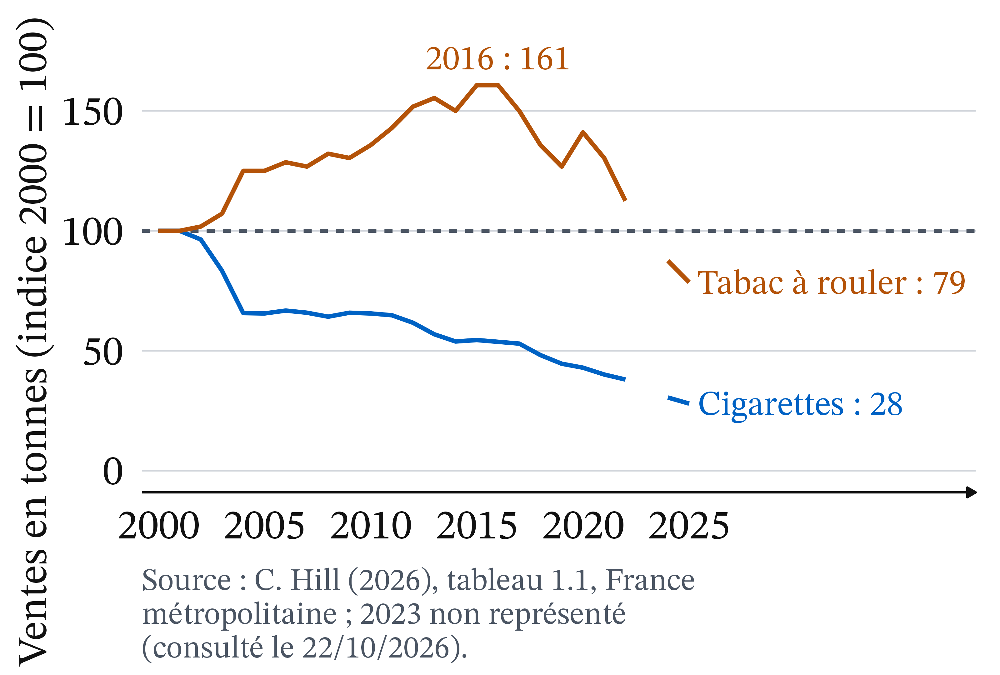
2000-2016 : cigarettes à l’indice 54, tabac à rouler à 161 (+61 %).
Puis le tabac à rouler recule : 79 en 2025, contre 28 pour les cigarettes. Son prix a rattrapé celui des cigarettes.
Source : C. Hill (2026), tableau 1.1, ventes en tonnes, France métropolitaine (consulté le 22/10/2026).
Prix du tabac en 2025 : France 191, moyenne de l’UE 100
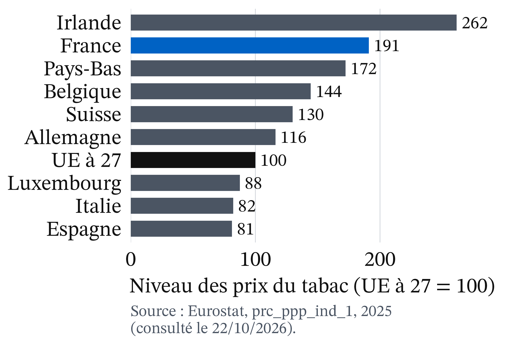
Niveau des prix du tabac : France 191 pour une moyenne de l’UE à 100 ; seule l’Irlande est plus chère (262).
Belgique 144, Luxembourg 88, Italie 82, Espagne 81 : en France, plus du double de ces trois derniers voisins.
Source : Eurostat, prc_ppp_ind_1, poste « Tabac », 2025 (consulté le 22/10/2026).
Droit de consommation : sommet en 2020, puis recul en euros constants
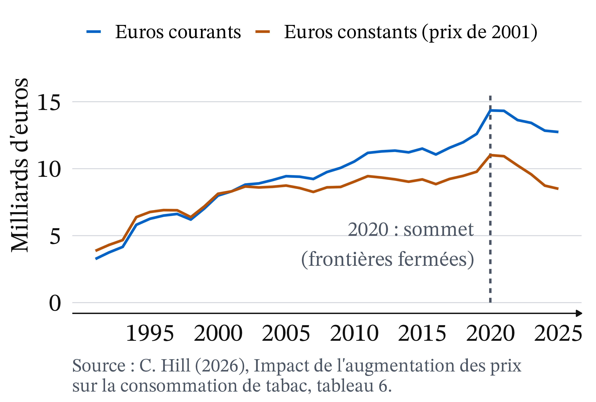
1991-2020 : recette × 4,4 en euros courants ; 14,35 Md€ en 2020.
2020, gonflé par les frontières fermées, est une mauvaise base. Depuis 2019 : stable en euros courants (12,60 puis 12,74 Md€), −13 % en euros constants.
Point d’attention : ne pas calculer une élasticité sur les seules ventes légales
Si une partie des fumeurs achète en Belgique ou au marché noir, les ventes des buralistes baissent plus que la consommation.
On surestime alors l’effet du prix sur la santé.
On prend pour un arrêt du tabac ce qui est en partie une fuite, dont le coût pour les recettes passe inaperçu.
L’élasticité mesurée par Hill est celle des ventes enregistrées, pas de la consommation.
Par génération : les jeunes sont plus sensibles au prix
Plus sensibles que leurs aînés (Hill, 2026, § 4.3) : budget plus petit, dépendance moins installée. Lycéens fumeurs quotidiens : 30,8 % en 2010, 5,6 % en 2024 (AFP, 28/05/2026).
Écart entre filières à 17 ans (ESCAPAD, mars 2022, cité par The Conversation, 25/07/2026) : lycée professionnel 22,1 %, général ou technologique 10,1 %, apprentis 38,4 %.
Par revenu : une taxe régressive, une réaction non démontrée
Taxe régressive : un paquet à 13,50 € pèse plus lourd dans un petit budget.
En théorie, les modestes devraient réagir davantage et gagner le plus en santé ; les données françaises ne le montrent pas (Hill, 2026, § 4.3).
Part de fumeurs chez les chômeurs : en hausse jusqu’en 2016, quand elle baissait chez les actifs occupés et les étudiants.
Pour qui n’arrive pas à arrêter : une perte de pouvoir d’achat.
Ventes frontalières : baisse plus forte depuis 2017, sauf en 2020
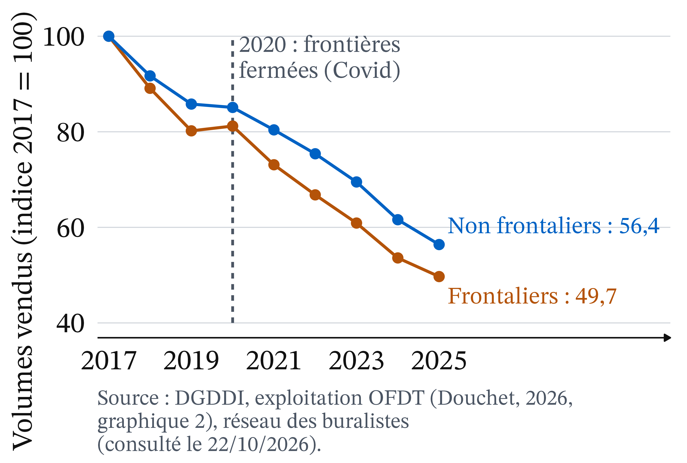
2017-2025 : −50,3 % dans les départements frontaliers, −43,6 % ailleurs.
2020, frontières fermées : seule année où les ventes frontalières remontent (80,2 puis 81,2).
Source : DGDDI, exploitation OFDT (Douchet, 2026, graphique 2), France continentale (consulté le 22/10/2026).
Tabagisme par sexe : un écart de 55 points en 1953, 4 en 2024
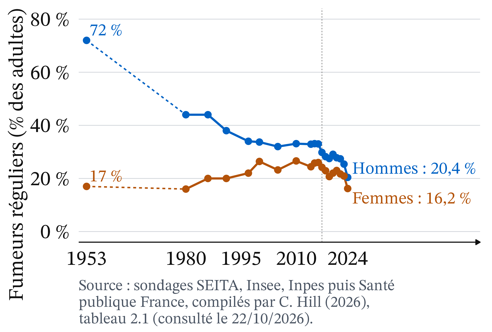
Hommes : baisse presque continue, de 72 % en 1953 à 20,4 % en 2024.
Femmes : 16 % en 1980, 26,6 % en 2010, puis 16,2 % en 2024.
2023-2024 : chute nette pour les deux sexes.
Source : sondages SEITA, Insee, Inpes puis Santé publique France, compilés par C. Hill (2026), tableau 2.1 (consulté le 22/10/2026).
État : 82,5 % du prix ; 12,74 Md€ de droit de consommation en 2025.
Buralistes : 32 850 en 2002, 22 800 en 2025.
Fabricants : moins de 1 € par paquet, mais ils fixent les prix.
Non-fumeurs : moins de tabagisme passif.
Controverse : continuer ou non à augmenter le prix du tabac
Analyse positive (ce qui est : mécanismes et effets, vérifiables)
Les ventes baissent, moins que le prix ne monte (e entre −0,5 et −0,3), davantage à long terme et chez les jeunes.
La taxe pèse surtout sur les fumeurs ; elle nourrit des fuites mal mesurées.
Analyse normative (ce qui devrait être : dépend de jugements de valeur)
Faut-il protéger le fumeur contre lui-même ? C’est la question du paternalisme.
Comment peser la santé de ceux qui arrêtent et le pouvoir d’achat de ceux qui continuent ?
Positions en présence : l’effet du prix est admis par tous
École de Chicago (Becker et Murphy) : informer, et taxer les seuls dommages causés aux autres.
Économie comportementale (Gruber et Kőszegi) : taxe plus élevée, qui corrige aussi l’internalité.
Santé publique (OMS ; Hill, 2026) : la hausse des prix est « de loin le moyen le plus efficace ».
Buralistes : marché parallèle ; limiter la hausse des accises à l’inflation (JO Sénat, 08/05/2025).
Le débat porte sur la taille des fuites (positif) et le droit de l’État à orienter des choix privés (normatif).
Droit : prix homologués par les douanes, Convention-cadre de l’OMS
Chaque fabricant propose ses prix, que l’administration des douanes homologue et publie au Journal officiel ; l’arrêté du 29 septembre 2026 fixe les prix au 1er novembre 2026 (Bourse Inside, 08/10/2026).
La France a ratifié la Convention-cadre de l’OMS pour la lutte antitabac, dont l’article 6 recommande d’augmenter les taxes sur le tabac (Hill, 2026).
À retenir
Tabac : e entre −0,5 et −0,3 ; +10 % de prix, −3 à −5 % de ventes.
Demande peu élastique : une hausse de prix augmente la dépense et la recette fiscale.
La charge d’une taxe retombe sur le côté le moins élastique : surtout les fumeurs.
L’addiction n’annule pas l’effet du prix : plus élastique à long terme et chez les jeunes.
Ventes légales ≠ consommation : les fuites réduisent l’effet sanitaire et la recette.
Protéger le fumeur (internalité) ou les autres (externalité) : un jugement normatif.
Plan de dissertation : ce que dit l’outil, ce qu’il ne tranche pas
Sujet : faut-il continuer à augmenter le prix du tabac ?
I. Ce que dit l’outil (positif)
A. Élasticité et addiction : les ventes baissent moins que le prix ne monte, davantage à long terme.
B. Incidence : la taxe pèse surtout sur les fumeurs ; les fuites réduisent l’effet.
II. Ce qu’il ne tranche pas (normatif)
A. Protéger les autres (externalité) ou le fumeur contre lui-même (internalité) : le paternalisme.
B. La santé contre le pouvoir d’achat : un impôt régressif.